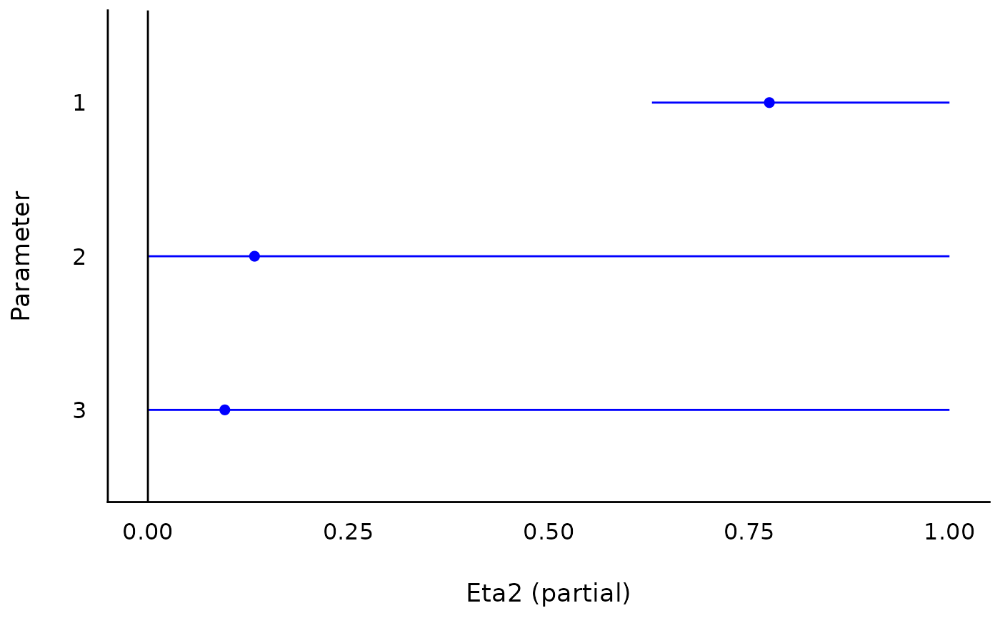

R/convert_tF_to_anova.R
F_to_eta2.RdThese functions are convenience functions to convert F and t test statistics to
partial Eta squared, (\(\eta{_p}^2\)), Omega squared (\(\omega{_p}^2\)),
Epsilon squared (\(\epsilon{_p}^2\); an alias for the adjusted Eta squared) and Cohen's f.
These are useful in cases where the various Sum of Squares and Mean Squares are not
easily available or their computation is not straightforward (e.g., in liner mixed models,
contrasts, etc.). For test statistics derived from lm and aov models, these
functions give exact results. For all other cases, they return close approximations.
See Effect Size from Test Statistics vignette.
F_to_eta2(f, df, df_error, ci = 0.9, ...) t_to_eta2(t, df_error, ci = 0.9, ...) F_to_epsilon2(f, df, df_error, ci = 0.9, ...) t_to_epsilon2(t, df_error, ci = 0.9, ...) F_to_eta2_adj(f, df, df_error, ci = 0.9, ...) t_to_eta2_adj(t, df_error, ci = 0.9, ...) F_to_omega2(f, df, df_error, ci = 0.9, ...) t_to_omega2(t, df_error, ci = 0.9, ...) F_to_f(f, df, df_error, ci = 0.9, squared = FALSE, ...) t_to_f(t, df_error, ci = 0.9, squared = FALSE, ...) F_to_f2(f, df, df_error, ci = 0.9, squared = TRUE, ...) t_to_f2(t, df_error, ci = 0.9, squared = TRUE, ...)
| df, df_error | Degrees of freedom of numerator or of the error estimate (i.e., the residuals). |
|---|---|
| ci | Confidence Interval (CI) level |
| ... | Arguments passed to or from other methods. |
| t, f | The t or the F statistics. |
| squared | Return Cohen's f or Cohen's f-squared? |
A data frame with the effect size(s) between 0-1 (Eta2_partial,
Epsilon2_partial, Omega2_partial, Cohens_f_partial or
Cohens_f2_partial), and their CIs (CI_low and CI_high). (Note that
for \(\omega_p^2\) and \(\epsilon_p^2\) it is possible to compute a
negative number; even though this doesn't make any practical sense, it is
recommended to report the negative number and not a 0).
These functions use the following formulae:
$$\eta_p^2 = \frac{F \times df_{num}}{F \times df_{num} + df_{den}}$$
$$\epsilon_p^2 = \frac{(F - 1) \times df_{num}}{F \times df_{num} + df_{den}}$$
$$\omega_p^2 = \frac{(F - 1) \times df_{num}}{F \times df_{num} + df_{den} + 1}$$
$$f_p = \sqrt{\frac{\eta_p^2}{1-\eta_p^2}}$$
For \(t\), the conversion is based on the equality of \(t^2 = F\) when \(df_{num}=1\).
Both Omega and Epsilon are unbiased estimators of the population Eta. But which to choose? Though Omega is the more popular choice, it should be noted that:
The formula given above for Omega is only an approximation for complex designs.
Epsilon has been found to be less biased (Carroll & Nordholm, 1975).
\(Adj. \eta_p^2\) is an alias for \(\epsilon_p^2\).
Unless stated otherwise, confidence intervals are estimated using the
Noncentrality parameter method; These methods searches for a the best
non-central parameters (ncps) of the noncentral t-, F- or Chi-squared
distribution for the desired tail-probabilities, and then convert these
ncps to the corresponding effect sizes. (See full effectsize-CIs for
more.)
For positive only effect sizes (Eta squared, Cramer's V, etc.; Effect sizes associated with Chi-squared and F distributions), special care should be taken when interpreting CIs with a lower bound equal to 0, and even more care should be taken when the upper bound is equal to 0 (Steiger, 2004; Morey et al., 2016). For example:
eta_squared(aov(mpg ~ factor(gear) + factor(cyl), mtcars[1:7, ]))
## Parameter | Eta2 (partial) | 90% CI ## -------------------------------------------- ## factor(gear) | 0.58 | [0.00, 0.84] ## factor(cyl) | 0.46 | [0.00, 0.78]
Albers, C., & Lakens, D. (2018). When power analyses based on pilot data are biased: Inaccurate effect size estimators and follow-up bias. Journal of experimental social psychology, 74, 187-195. doi: 10.31234/osf.io/b7z4q
Carroll, R. M., & Nordholm, L. A. (1975). Sampling Characteristics of Kelley's epsilon and Hays' omega. Educational and Psychological Measurement, 35(3), 541-554.
Cumming, G., & Finch, S. (2001). A primer on the understanding, use, and calculation of confidence intervals that are based on central and noncentral distributions. Educational and Psychological Measurement, 61(4), 532-574.
Friedman, H. (1982). Simplified determinations of statistical power, magnitude of effect and research sample sizes. Educational and Psychological Measurement, 42(2), 521-526. doi: 10.1177/001316448204200214
Mordkoff, J. T. (2019). A Simple Method for Removing Bias From a Popular Measure of Standardized Effect Size: Adjusted Partial Eta Squared. Advances in Methods and Practices in Psychological Science, 2(3), 228-232. doi: 10.1177/2515245919855053
Morey, R. D., Hoekstra, R., Rouder, J. N., Lee, M. D., & Wagenmakers, E. J. (2016). The fallacy of placing confidence in confidence intervals. Psychonomic bulletin & review, 23(1), 103-123.
Steiger, J. H. (2004). Beyond the F test: Effect size confidence intervals and tests of close fit in the analysis of variance and contrast analysis. Psychological Methods, 9, 164-182.
eta_squared() for more details.
Other effect size from test statistic:
chisq_to_phi(),
t_to_d()
# \donttest{ if (require("afex")) { data(md_12.1) aov_ez("id", "rt", md_12.1, within = c("angle", "noise"), anova_table = list(correction = "none", es = "pes") ) }#>#>#>#> #> #> #> #> #>#> #>#> #> #> #> #> #> #> #>#> #>#> #> #>#> Anova Table (Type 3 tests) #> #> Response: rt #> Effect df MSE F pes p.value #> 1 angle 2, 18 3560.00 40.72 *** .819 <.001 #> 2 noise 1, 9 8460.00 33.77 *** .790 <.001 #> 3 angle:noise 2, 18 1160.00 45.31 *** .834 <.001 #> --- #> Signif. codes: 0 ‘***’ 0.001 ‘**’ 0.01 ‘*’ 0.05 ‘+’ 0.1 ‘ ’ 1# compare to: (etas <- F_to_eta2( f = c(40.72, 33.77, 45.31), df = c(2, 1, 2), df_error = c(18, 9, 18) ))#> Eta2 (partial) | 90% CI #> ----------------------------- #> 0.82 | [0.66, 0.89] #> 0.79 | [0.49, 0.89] #> 0.83 | [0.69, 0.90]#>if (require("lmerTest")) { # for the df_error fit <- lmer(extra ~ group + (1 | ID), sleep) # anova(fit) # #> Type III Analysis of Variance Table with Satterthwaite's method # #> Sum Sq Mean Sq NumDF DenDF F value Pr(>F) # #> group 12.482 12.482 1 9 16.501 0.002833 ** # #> --- # #> Signif. codes: 0 '***' 0.001 '**' 0.01 '*' 0.05 '.' 0.1 ' ' 1 F_to_eta2(16.501, 1, 9) F_to_omega2(16.501, 1, 9) F_to_epsilon2(16.501, 1, 9) F_to_f(16.501, 1, 9) }#>#> #>#> #> #>#> #> #>#> Cohen's f (partial) | 90% CI #> ---------------------------------- #> 1.35 | [0.57, 2.08]## Use with emmeans based contrasts ## -------------------------------- if (require(emmeans)) { warp.lm <- lm(breaks ~ wool * tension, data = warpbreaks) jt <- joint_tests(warp.lm, by = "wool") F_to_eta2(jt$F.ratio, jt$df1, jt$df2) }#>#> Eta2 (partial) | 90% CI #> ----------------------------- #> 0.30 | [0.12, 0.45] #> 0.09 | [0.00, 0.22]# }